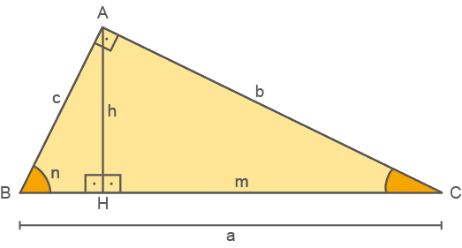

Triângulo retângulo
Hoje em dia, alguns operários da construção civil usam o triângulo retângulo para verificar se uma parede está no “esquadro”. Para isso, mede-se 4 m em uma parede e 3 m na outra; em seguida, mede-se o terceiro lado, que compõe um triângulo. Se essa medida for igual a 5 m, a parede está no “esquadro”.
Reinaldo Rosa / Acervo da Editora.
converse
Os povos antigos utilizavam cordas divididas por nós em várias partes iguais, para fazer medições. Eles percebiam que se formassem um triângulo utilizando cordas com 3, 4 e 5 unidades de comprimento, um de seus ângulos era um ângulo reto (90°), ou seja, obtinha-se um triângulo retângulo.
1. O que significa dizer, na construção civil, que uma parede está no “esquadro”?
2. Ao se realizar a medição de duas paredes com 3 m e 4 m, que representam os lados de um triângulo, para que a parede esteja no “esquadro” é necessário que o terceiro lado do triângulo tenha uma medida igual a 5 m. Caso essa medida seja menor que 5 m, qual será a classificação do ângulo formado entre as paredes quanto à medida do seu ângulo? E se a medida for maior que 5 m, qual será a classificação desse ângulo?
Reinaldo Rosa / Acervo da Editora.
Conforme já estudado, o triângulo retângulo é todo triângulo que tem um dos seus ângulos internos reto, ou seja, que mede 90°.
As relações métricas desse triângulo têm grande aplicabilidade nas áreas de Engenharia, Arquitetura, Física, entre outras. Seu estudo é considerado muito importante.
Os lados do triângulo retângulo recebem nomes especiais. Observe:
Ao traçar a altura h relativa à hipotenusa, obtemos:
 sobre a hipotenusa.
sobre a hipotenusa. sobre a hipotenusa.
sobre a hipotenusa.A projeção ortogonal de um segmento de reta a uma reta r é o segmento de reta , em que:
é a projeção ortogonal do segmento sobre a reta r.
Relações métricas no triângulo retângulo
Para verificar algumas relações entre as medidas de um triângulo retângulo, vamos considerar o triângulo retângulo ABC e traçar nele a altura relativa à hipotenusa.
Em que:
é o cateto de medida c. sobre a hipotenusa de A altura divide o triângulo retângulo em outros dois triângulos retângulos, que são semelhantes entre si e ao triângulo ABC.
Acompanhe a seguir as relações métricas que podem ser estabelecidas entre esses triângulos.
1.ª relação
Observe o triângulo ABC em relação ao triângulo ABH:
Assim, temos:
Portanto:
c2 = a ∙ n
2.ª relação
Observe o triângulo ABC em relação ao triângulo ACH:

Assim, temos:
Portanto:
b2 = a ∙ m

3.ª relação
Observe agora o triângulo ABH em relação ao triângulo ACH:
Já vimos que ΔABC ~ ΔABH e que ΔABC ~ ΔACH, logo:
ΔABC ~ ΔABH ~ ΔACH
Então:
ΔABH ~ ΔACH
Assim, temos:
Portanto:
h2 = n ∙ m
4.ª relação
Agora, observe novamente a relação entre os triângulos ABC e ABH:
Já vimos que ΔABC ~ ΔABH.
Assim, temos:
Portanto:
a · h = b · c
Triângulo retângulo e as suas relações métricas
h
h
Se os palitos utilizados por Joana medem 24 cm, 18 cm e 30 cm, qual é a medida da altura da estrutura do telhado dessa maquete?
Quantas voltas completas Marcelo deverá dar em torno da praça para correr, pelo menos, 6 km?
As distâncias das cidades A, B e C até a hidrelétrica são de 24 km, 18 km e 32 km, respectivamente. Nessas condições determine, em seu caderno, as distâncias entre as cidades.
Qual é a medida do segmento ?
Encontre soluções
B
b
m
a
A
h
n
c
C
A
x cm
C
4 cm
(x + 6) cm
B
B
4 cm
A
x
6 cm
C
6 cm
A
B
x
10 cm
C
Reinaldo Rosa / Acervo da Editora.
B
4 cm
5 cm
x
A
3 cm
C
B
9 cm
A
7,2 cm
15 cm
x
C
B
12 cm
9,6 cm
x
A
C
A
C
6 cm
x
9 cm
B
B
x cm
A
2 cm
(x + 3) cm
C
Sérgio Bonfim/Acervo da Editora
Pouco se sabe sobre o matemático Pitágoras. Ao que parece, ele nasceu por volta de 572 a.C., na ilha grega de Samos. Já adulto, em Crotona ‒ uma colônia grega situada no sul da Itália ‒, fundou a famosa escola pitagórica, que, além de ser um centro de filosofia, matemática, música e ciências naturais, era também uma irmandade muito unida.
Acredita-se que Pitágoras morreu com mais de 70 anos de idade. Sua irmandade continuou a existir por pelo menos mais dois séculos, após sua morte.
O Teorema de Pitágoras é considerado uma das principais descobertas da Matemática, ele descreve uma relação existente no triângulo retângulo.
Veremos agora a relação existente entre os lados de um triângulo retângulo cujas medidas são 3 cm, 4 cm e 5 cm por meio da comparação entre áreas.


Agora, registrem no caderno as respostas das questões a seguir:
Agora veremos que a relação encontrada entre as medidas dos lados de um triângulo retângulo específico, 3 cm, 4 cm e 5 cm, vale para qualquer triângulo retângulo. Como há várias maneiras de se demonstrar essa relação, apresentaremos uma delas. Observe:

Vimos que, para esse tipo de triângulo, valem as seguintes relações:
b2 = a ∙ m
c2 = a ∙ n
Adicionando-as membro a membro, temos:
b2 = a ∙ m
+ c2 = a ∙ n
b2 + c2 = a ∙ m + a ∙ n
Fatorando o 2.º membro, temos:
b2 + c2 = a ∙ (m + n)
Como m + n = a, temos:
b2 + c2 = a ∙ a
b2 + c2 = a2
ou
a2 = b2 + c2
Agora, vejamos uma situação na qual podemos utilizar o Teorema de Pitágoras.
Em um poste foi instalado um transformador. No lado oposto, colocou-se um cabo de 10 metros de comprimento, com a finalidade de manter o poste em equilíbrio. Uma das extremidades do cabo foi fixada no chão, a 6 metros de distância, e a outra, na extremidade do poste, conforme mostra a ilustração.
Sabendo-se que o cabo, o poste e o chão formam um triângulo retângulo, qual é a medida da altura (h) do poste?
De acordo com o enunciado, temos as seguintes medidas:

Aplicando o Teorema de Pitágoras, temos:
102 = h2 + 62
100 = h2 + 36
100 - 36 = h2
64 = h2
h2 = 64
h =
h = 8 m
Logo, o poste tem 8 metros de altura.
Teorema de Pitágoras

Busto de Pitágoras. Escultura do original grego da metade do século V a.C. Mármore, 49,3 cm, inv. MC0594. Museu Capitolino, Roma.
Javier Almodóvar / Flickr

Reinaldo Rosa / Acervo da Editora.

.
Em seguida, Dona Bete marca os pontos médios de cada lado e desenha um novo triângulo como mostra a figura abaixo.
Encontre soluções
Reinaldo Rosa / Acervo da Editora.
P
24 km
30 km
M
Q
H
D
A
G
E
C
B
F
Reinaldo Rosa / Acervo da Editora.
A
C
3
A
4
5
B
B
C
B1
A
C1
A1
B
12 cm
9 cm
8 cm
Medida da diagonal de um quadrado
Por meio do Teorema de Pitágoras, podemos obter uma relação que nos permite calcular a medida da diagonal de um quadrado.
Vamos considerar o quadrado ABCD, de lado e diagonal d:
A diagonal divide o quadrado em dois triângulos retângulos congruentes.
Aplicando o Teorema de Pitágoras no triângulo retângulo ACD, temos:
d2 = 2 + 2
d2 = 2 2
d =
d =
Note que precisamos encontrar um número que elevado ao quadrado resulte em 2. Isso significa que a medida do comprimento da diagonal do quadrado não pode ser expressa por um número racional, tomando a medida de comprimento do lado do quadrado () como unidade de medida. Sua representação decimal possui infinitas casas decimais que não se repetem de modo periódico, ou seja, não é uma dízima periódica.
O valor aproximado para  é 1,4142135623730950488016887242097.
é 1,4142135623730950488016887242097.
Medida da altura de um triângulo equilátero
Por meio do Teorema de Pitágoras também é possível encontrar uma relação que nos permite calcular a medida da altura de um triângulo equilátero.
Vamos considerar o triângulo equilátero ABC, de lado e altura h.
A altura divide o triângulo equilátero em dois triângulos retângulos congruentes.
Aplicando o Teorema de Pitágoras no triângulo retângulo ACH, temos:
Note que também é um número irracional.
A
D
d
B
C
A medida da altura (h) de um triângulo equilátero é dada por:
2
(Considere = 1,41)

(Considere  = 1,73)
= 1,73)
Encontre soluções
6 cm
D
A
6 cm
d
B
C
F
E
9 cm
G
F
16 cm
16 cm
E
h
16 cm
G
Q
M
4 cm
N
P

Sérgio Bonfim/Acervo da Editora
Reinaldo Rosa / Acervo da Editora.
Probabilidade e estatística
No ano anterior, vimos a seguinte situação:
Gabriel foi ao banco solicitar um empréstimo. Antes, ele havia feito algumas simulações on-line para negociar com o seu gerente quando chegasse ao banco. Em uma dessas simulações ele emprestaria R$ 5.000,00 com uma taxa de juros de 5% ao mês. Quanto de juros ele pagaria no primeiro mês?
5% de 5000,00 é
Assim, a taxa de juros mensal é de 250 reais.
Se ele pagar em 10 vezes, considerando a taxa de juros simples, qual será o montante final a ser pago?
Como são 10 meses, o juros a ser pago seria de 10 × 250 = 2500. Adicionado ao valor do empréstimo, temos: 5000 + 2500 = 7500.
Ou seja, o valor a ser pago será de R$ 7.000,00
Para este cálculo foi considerado o juros simples e foi utilizado a seguinte fórmula de matemática financeira:
M = C × i × t
Na qual:
Em muitos casos, o juros aplicado não é juros simples e sim, juros composto. Vamos exemplificar com o seguinte quadro:
|
Mês |
Montante |
Juros no mês |
Juros acumulados |
|
0 |
R$ 5.000,00 |
R$ - |
0 |
|
1 |
R$ 5.250,00 |
R$ 250,00 |
R$ 250,00 |
|
2 |
R$ 5.512,50 |
R$ 262,50 |
R$ 512,50 |
|
3 |
R$ 5.788,13 |
R$ 275,63 |
R$ 788,13 |
|
4 |
R$ 6.077,53 |
R$ 289,41 |
R$ 1.077,53 |
|
5 |
R$ 6.381,41 |
R$ 303,88 |
R$ 1.381,41 |
|
6 |
R$ 6.700,48 |
R$ 319,07 |
R$ 1.700,48 |
|
7 |
R$ 7.035,50 |
R$ 335,02 |
R$ 2.035,50 |
|
8 |
R$ 7.387,28 |
R$ 351,78 |
R$ 2.387,28 |
|
9 |
R$ 7.756,64 |
R$ 369,36 |
R$ 2.756,64 |
|
10 |
R$ 8.144,47 |
R$ 387,83 |
R$ 3.144,47 |
Observe que ao final do período o valor do juros é maior, pois nessa modalidade de correção, os juros cobrados sobre uma dívida passam a incidir também sobre o valor dos juros acrescidos e não somente sobre o capital inicial. A fórmula que podemos utilizar para se chegar a essa resposta é:
M = C× (1 + i)t
Substituindo os dados da situação, temos:
M = 5000 × (1 + 0,05)10 = 5000 × 1,0510 = 5000 × 1,0510 ≈ 8144,47.
Assim, ao final de 10 meses, ele pagará R$ 8.144,47.
Vamos fazer o quadro que apresentamos com o auxílio do software LibreOffice.
Obtemos o seguinte resultado:
relembrE
Na figura anterior, que representa o projeto de uma escada com 5 degraus de mesma altura, o comprimento total do corrimão é igual a:
Sabendo que esta via divide o contorno maior do gramado em dois pedaços, um de 32 m e outro de 18 m, o contorno b mede, em metros:
A distância comum deverá ser:
Sérgio Bonfim/Acervo da Editora
D
C
B
A